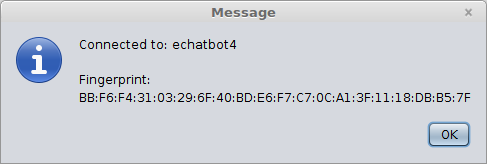

A printable PDF is available.
Project Phase 4 -- Due Tuesday, April 25
If you successfully completed phase 3 of the project, you should now have a chat client that sends and receives messages that are secure with respect to a passive adversary. In other words, the message contents will remain secret from any adversary that doesn't actively tamper with the communication. In this, the final phase, you will incorporate integrity protections to ensure that you are chatting with the right user and that messages are not tampered with. By completing this phase, you will have a chat client that meets all of the basic security requirements set out at the beginning of class, although our interface does not have a way to send non-text messages (this is a user-interface issue, however, not an issue with the underlying chat system). The solution should protect against even a malicious chat hub, and provides forward secrecy for conversations. My solution for phase 3 will be available in BitBucket as soon as all student submissions for phase 3 have been made, and you can start from either my phase 3 solution or your own.
- For this part, you will generate a keypair and get a
certificate that binds your public key to your username. Your chat
program must utilize a "
KeyStore" that stores both your own keypairs as well as certificates of known and trusted others. A keystore can be created and updated through the command-line tool "keytool," which is a standard part of the Java SDK. In the UNCG computer labs, all you need to do is open a command prompt and type "keytool" to run the program. Just running the program without any command-line arguments gives a list of commands that can be used, and documentation is at http://docs.oracle.com/javase/8/docs/technotes/tools/windows/keytool.html.Keys stored in the keystore are accessed by an "alias," and for this program you should use the following naming convention: for keys that you own (so have both public and private keys), you should use the alias
mykey-username, whereusernameshould be replaced by your UNCG username (e.g., userjoewould store his key under aliasmykey-joe). The keystore will be stored in a file that you choose and protected with a password that you select. The default values in the code I am providing usechatapp.ksas the keystore file anddefaultPWfor the password, but you can change these if you want. You need to be careful about what directory you store the keystore file in -- if you don't use a full pathname and you are using NetBeans, it is easiest to store the file in the main NetBeans project directory. You should change into that directory before executing any of thekeytoolcommands.To generate your own keypair, use the
-genkeypaircommand as shown below. Note that you must use your UNCG username as your chat system username, both in the alias name and in response to the first prompt asking for "first and last name" (despite the prompt, don't use your name here -- enter your username). The interaction, showing the creation of a keypair for userjoeis shown below (only the "name" field is really used in the chat system, but use reasonable values for the other fields as shown below).prompt$ keytool -keystore chatapp.ks -genkeypair -alias mykey-joe
Enter keystore password:
Re-enter new password:
What is your first and last name?
[Unknown]: joe
What is the name of your organizational unit?
[Unknown]: CSC580
What is the name of your organization?
[Unknown]: UNCG
What is the name of your City or Locality?
[Unknown]: Greensboro
What is the name of your State or Province?
[Unknown]: NC
What is the two-letter country code for this unit?
[Unknown]: US
Is CN=joe, OU=CSC580, O=UNCG, L=Greensboro, ST=NC, C=US correct?
[no]: yes
Enter key password for <mykey-joe>
(RETURN if same as keystore password):
Next, you will need to get a certificate from a trusted certification authority (that's me!) for your key. To do this, extract a "certificate request" from the keystore as shown below
keytool -keystore chatapp.ks -certreq -alias mykey-joe -rfc -file cert.req
This creates a file named
cert.reqwhich you should email me as an attachment from your UNCG email account. I will create the certificate and email it back to you -- and only to your UNCG account, and only if the request account matches the name in the certificate request! The response will be a certificate, with a name likejoe.crtas well as the certification authority certificateca.crt. You will need to first install the CA certificate using the-importcertcommand tokeytool, and then you can install your own certificate (use the same alias for your certificate as you did when you generated the key). After you complete these steps, your keystore will be ready to use by the chat program. - For this part, you will change the chat protocol so that
the users exchange certificates and sign their
:ka1public key exchange messages. To use the more secure protocols, you should connect to user "echatbot4", which differs from "echatbot3" in some important ways. First, "echatbot4" will provide two different ciphersuites on its ":ka" message:ecdh-secp224r1+x509+aes128/cbc(note that "nocert" from phase 3 changed to "x509") andecdh-secp224r1+x509+aes128/gcm128. Until you get to part 5 below, you should answer with:kaok ecdh-secp224r1+x509+aes128/cbcand just work on authenticating users (not messages).This changes two things about the chat protocol:
- The
:ka1message should be immediately preceded by a ":cert xxxx" message, wherexxxxis where your Base64-encoded certificate goes. - The
:ka1message now has two parts, each Base64 encoded and separated by spaces. The first part is simply the public key for the key agreement protocol, and the second part is a signature on the public key, made using the private key corresponding to the certificate that you shared in the preceding:certmessage.
The provided code includes a partially-implemented
ChatKeyManagerclass, along with a new version of theLoginCredentialsclass which allows it to keep track of theChatKeyManagerto be used with any logged-in hub session. See the code for details. TheChatKeyManagerclass includes the header for a method namedverifyCertAndSigthat you will need to fill in. This method takes the name of the party you are trying to communicate with, their certificate, the key exchange data, and the signature, and returns either aStringdescribing an error or returnsnullif everything verifies (right now it always returnsnull, so it accepts anything!). In particular, you code should check that the certificate is signed by the chat system Certification Authority, it is within the date range for validity, and the common name ("CN") is the username of the person you want to be chatting with. If that verifies, then the signature on the key exchange data should also be verified. If any of these checks doesn't pass, yourConversationclass should send a:failmessage with the error description and then shut down the conversation. If all of the checks are passed, then you can complete the key agreement protocol and now you have established communication with a remote party whose identity you have verified! - The
- For this part, you will provide a means for the user to
see the fingerprint of the remote party's certificate. The provided
code adds a new menu item named "Other Party Info" to the GUI
"Connection" menu, which is enabled only when there is an active
connection. The action taken when this is enabled and selected by
the user is to simply call
convo.getOtherInfo()to get a String describing the other user. The resulting information window should look something like this: To maintain compatibility with
keytool, the fingerprint is the SHA1 hash of the certificate. - For this part, you will use your keypair to log in to the
chat hub. In the new version of the
LoginCredentialsclass, there is a constructor that takes aChatKeyManagerobject, but does not take a password string. If this constructor is used, then the system should use your keypair to log in as follows: TheLoginCredentialsmethod getUserID method now returns "pubkey username" instead of just "username," and when this is passed along to the chathub server it indicates that you want to use a public key authentication method to log in. The chat hub then sends a random string back as a challenge -- you should complete the code in theLoginCredentialsclass that will answer by prepending the string "login-" to the received challenge, signing that using your private key (corresponding to your certificate), and then sending both your certificate and the signature (both Base64 encoded, and separated by spaces) back as the answer to the challenge. If your certificate verifies as valid, the name in the certificate matches your claimed username, and the signature is valid, then you will be logged in. - For this part, you will add message integrity protection
by using GCM mode for the symmetric cipher. Once you have all of
the above parts working, you should change your
:kaokmessage to select theecdh-secp224r1+x509+aes128/gcm128ciphersuite, and switch the cipher to use GCM mode instead of CBC mode. This requires setting up parameters differently, using theGCMParameterSpecclass, and catchingAEADBadTagExceptionto detect when the message integrity check fails. InGCMParameterSpec, you should use a "tag length" of 128 bits. Information about how to use GCM mode is given in both the JCA documentation and in theCipherclass API documentation. - Extra Credit: Extend the chat application so that it can save user certificates, and warn the user if a received certificate does not match the saved certificate. The details of how you do this is up to you. One possibility is to add a menu item to save the other party's certificate. After the certificate is saved, any subsequent connection to that user that provides a different certificate than the saved one you indicates a potential security issue, so you would give the user a warning (and possibly give an option to connect anyway).